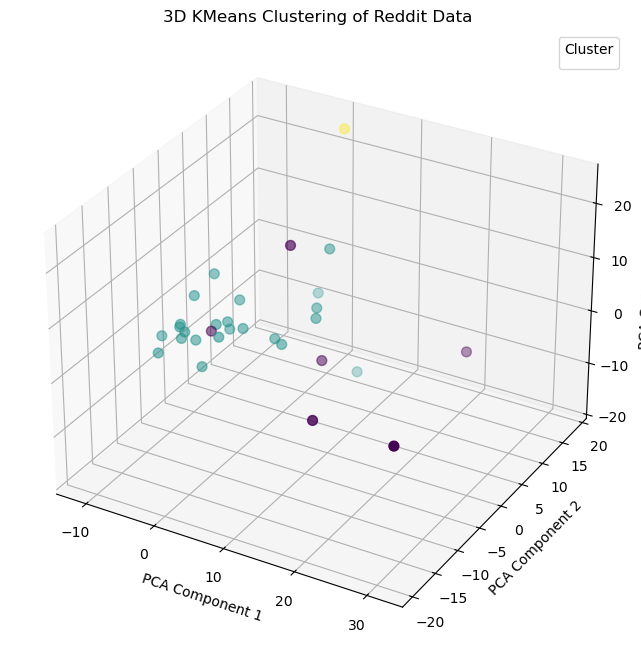

Clustering
Clustering w/ KMeans & Principal Component Analysis
In this section, we will explore the clustering of our data using KMeans and Principal Component Analysis (PCA). The goal is to identify distinct groups within the dataset based on their characteristics.
Kmeans is an unsupervised learning algorithm that partitions the data into K distinct clusters based on feature similarity. The number of clusters (K) is a parameter that we need to define before running the algorithm.
We will visualize the clusters formed by KMeans and analyze the results to understand the underlying patterns in the data.
Why does PCA have to happen in conjunction with KMeans??
Principal Component Analysis (PCA) is a dimensionality reduction technique that transforms the data into a new coordinate system, where the greatest variance lies along the first coordinate (principal component), the second greatest variance along the second coordinate, and so on. This transformation helps to reduce noise and improve the performance of clustering algorithms like KMeans.
The KMeans algorithm works best in lower dimensonal space, so reducing dimensions helps kmeans perform better!
Data Prep.
The purpose of unsupervised ml models is to discover new things, thats why we tune hyperparametes and see what we see. Its just charting through murky data trying to learn something, or quantify something.
Unsupervised also means no labels for our data, since the data collected last time all had labels, we have to remove them to allow the model to make connections itself.
This is what the dataframe I was working with clustering looks like:

2 Components

When we compress 1000 columns and 35 rows of vectorized text data, you'd expect a major loss of information, and you'd be right.

The total explained variance ratio is 0.157(15%), which means that the PCA transformation has not captured much of the original data's variance. This indicates that the data is highly complex and may require more components to accurately represent its structure.
Then, I would save the clusters as seperate CSVs and count the biggest cluster, often when working with this reddit data, one cluster would contain 80-90% of all of the data.
Then I would take the biggest cluster and run it through more pca dimensionality reduction and another kmeans model to find more centroids and really group up the data.

Here is an awesome 3D chart of the above clustered data!
If I elevate the max principal componenets to 10, I capture 51% of the total information!

Those small numbers in the Explained Variance Ratio section show the total information with one principal component.
Mapping the subreddits!
Dendrogram

Here is a dendrogram of the clusters, this is a great way to visualize the clusters and see how they are related to each other.
It is possible to draw connections between these, forexample subreddits that look they would be on one political side seem to aggregte togehter!
Here is a t-SNE map of the clusters, this is a great way to visualize the clusters and see how they are related to each other.
t-SNE is a non linear dimensionality reduction technique!

High Dimension Text Data
Silhouette Width Growth Charts are commmon to find where the optimal number of clusters are for a model, the problem with complicated data is that we are prone to overfitting, and some clusters just contain one subreddit post.

4 Clusters
I wanted to make some of these clusters again using R because of Partition Around Mediods(PAM).

Here is a 4 cluster model, as you can see a majority of the data falls into one cluster, similar to the pythonic charts above.
If we use the insights from the Silhouette chart, (around 7 or 8 clusters we get to 90% information retention) still having micro-clusters (overfitting model)

Above, there are 'clusters' that only contain one centroid, meaning that this model is overfit and the more common that is the less useful partionion the data falls into. This is common with highly complex text data, especially when falling around similar topcis.
Conclusion
Clusters formed based on shared word usage patterns — even though no subreddit labels were used in the clustering itself. For example:
- Some clusters grouped documents from politically oriented subs (e.g., climate denial vs. policy advocacy).
- Others grouped around technological optimism or doomsday language.